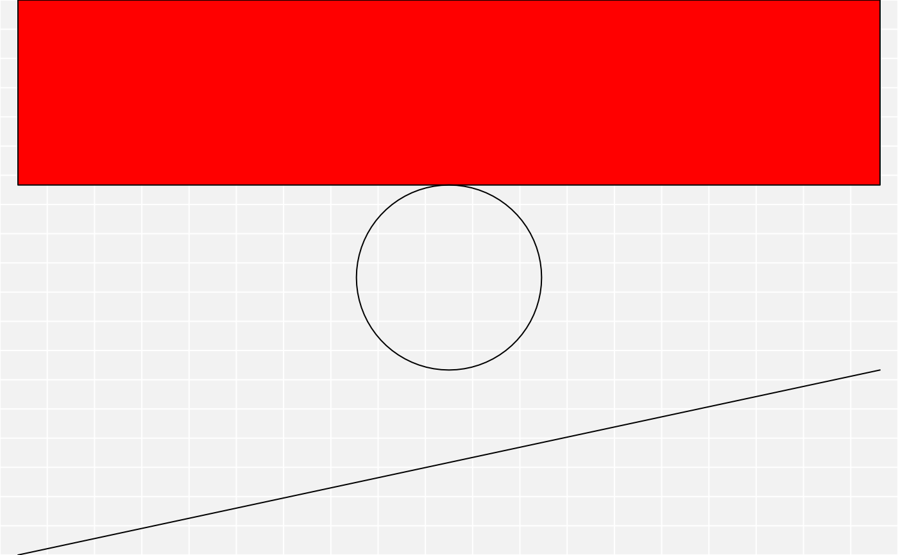
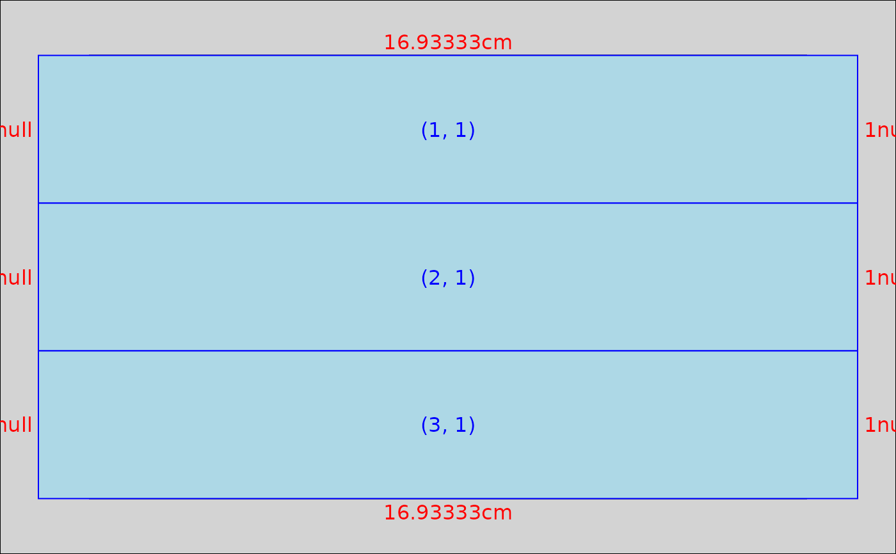

This function stacks a list of grobs into a single column gtable of the given width and heights.
gtable_col(name, grobs, width = NULL, heights = NULL, z = NULL, vp = NULL)
| name | a string giving the name of the table. This is used to name the layout viewport |
|---|---|
| grobs | a single grob or a list of grobs |
| width | a unit vector giving the width of this column |
| heights | a unit vector giving the height of each row |
| z | a numeric vector giving the order in which the grobs should be
plotted. Use |
| vp | a grid viewport object (or NULL). |
A gtable with one column and as many rows as elements in the grobs list.
Other gtable construction: gtable_matrix,
gtable_row, gtable_spacer,
gtable
library(grid) a <- rectGrob(gp = gpar(fill = "red")) b <- circleGrob() c <- linesGrob() gt <- gtable_col("demo", list(a, b, c)) gt#> TableGrob (3 x 1) "demo": 3 grobs #> z cells name grob #> 1 1 (1-1,1-1) demo rect[GRID.rect.84] #> 2 2 (2-2,1-1) demo circle[GRID.circle.85] #> 3 3 (3-3,1-1) demo lines[GRID.lines.86]plot(gt)